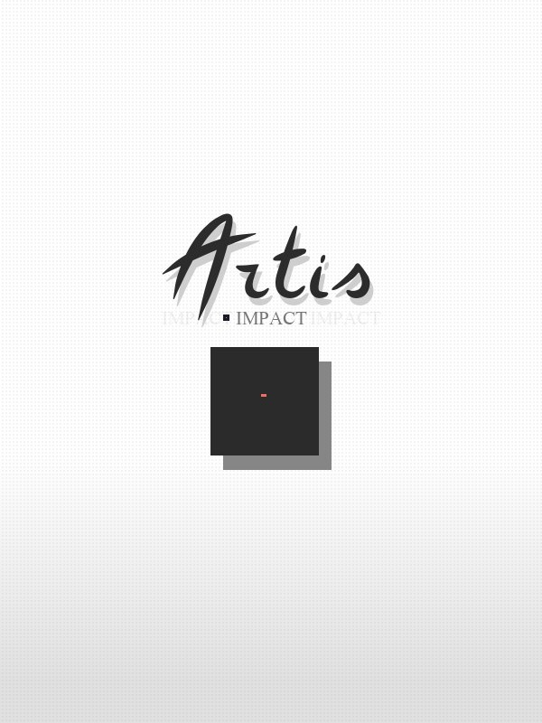

Artis Impact
Artis Impact
Details
|  | |
| Playtime | 3h 1m 0s |
| Last Activity | 2025-08-26 1:13:24 |
| Added | 2025-08-24 15:32:26 |
| Modified | 2025-08-24 15:32:36 |
| Completion Status | Played |
| Library | Steam |
| Source | Steam |
| Platform | PC (Windows) |
| Release Date | 2025-08-07 |
| Community Score | |
| Critic Score | |
| User Score | |
| Genre | Adventure Indie Role-playing (RPG) Simulator |
| Developer | Mas |
| Publisher | Mas |
| Feature | Single Player |
| Links | Uknown Uknown Uknown Uknown Uknown Uknown Uknown Uknown Uknown |
| Tag | |
Description
A Streamlined RPG Experience
Each map in this post-apocalyptic world is hand-drawn from scratch. The streamlined mechanics and unique art offer a smooth and relaxing experience tailored for a story-rich single-player experience. Whether you're a newcomer or a veteran, engaging gameplay, classic turn-based combat, character growth, and bountiful exploration will pull you through this forgotten world of the future.
Classic Turn-Based Combat
Artis Impact's streamlined, turn-based combat allows players to meet and overcome challenges without requiring overwhelming, complex strategies. Improve Akane's strength through continued training and upgrade your weapons to take on powerful bosses and master elegantly simple retro-inspired combat mechanics.
Journey Through Hidden Stories
The mysterious post-apocalyptic world is filled with deep secrets, and Artis Impact offers rich storytelling and interactions. Players will encounter dark, captivating narratives, as well as cozy and humorous moments. Explore to discover hidden secrets, or simply enjoy light-hearted daily activities and settle down with a potato croquette.
Retro-Inspired Pixel Art Meets Hand-Drawn Comic Style
Artis Impact perfectly blends gorgeous pixel art with retro comic aesthetics, delivering a unique charm. This is supported by character-driven dialogue, delivering a lighthearted and humorous experience within this dark, future world. Explore with Akane's AI companion, Bot, and uncover a compelling narrative, unique art and animations, and heartwarming moments along the way.
Upgrade Your Home and Enjoy a Slow-Paced Life
Expand and decorate your cozy home while enjoying a variety of daily life activities. Earn extra income through part-time jobs, manage your finances, or simply relax with bathing, exercise, and cooking. It offers a healing world where you can unwind and savor the simple joys of life.